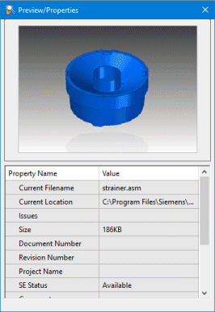

View a preview of your document
-
In the Design Manager document list, click the Current Filename cell for the document of interest.
-
Choose Home tab→Show group→Preview
 .
.
-
(Optional) To display the preview for another document, in the document list, click the Current Filename cell for the new document.
Solid Edge updates the Preview/Properties pane with the information for the most recently selected document.
-
To close the Preview command, choose Home tab→Show group→Preview
again.